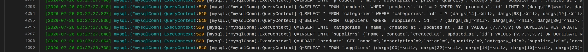
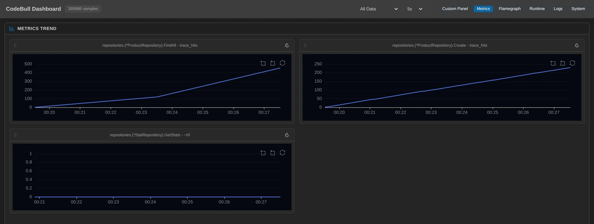
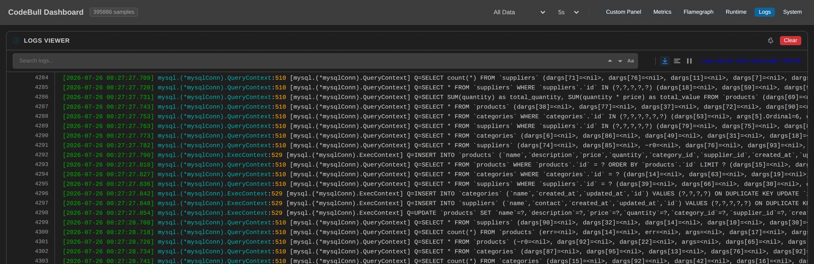

In those eight minutes I saw something that still bothers me a little: the frontend only changed a product's quantity, but the database received six statements — two of which were INSERTs into categories and suppliers, two tables I never intended to touch.
This piece isn't about a tool. It's about what happens when you stand in the right place and watch everything a CRUD service actually does underneath.
First decide where to stand
This service is the textbook three-layer app: Gin handler → service → repository → GORM → MySQL. You write db.Save(product); what reaches MySQL is two layers away.
My first choice was GORM's internal convergence point, gorm.(*processor).Execute — the same place I stood the last time I watched a service like this. I copied the template over: SQL={string(stmt.SQL.buf)}.
Here's what the dashboard gave me:
SQL=len=67 | rows=6
SQL=len=63 | rows=5stmt.SQL is a strings.Builder, and its internal buffer never got expanded into a string — I only got the length. On this GORM version, under this build, that road was closed.
So I stepped down one layer, to the driver's door:
func (mc *mysqlConn) QueryContext(
ctx context.Context, query string, args []driver.NamedValue) (driver.Rows, error)
func (mc *mysqlConn) ExecContext(
ctx context.Context, query string, args []driver.NamedValue) (driver.Result, error)Here query is an honest string parameter — it is the statement about to go on the wire. Reads go through QueryContext, writes through ExecContext, so two points cut everything the service does to its database into two clean halves.
That gave me this setup:
- Reads (
connection.go:510):Q={query} - Writes (
connection.go:529):Q={query} - Plus three plain counters up in the application itself:
ProductRepository.FindAll,ProductRepository.Create,StatRepository.GetStats— there to reconcile against what happens below.
The top counts "one API call," the bottom counts "how many SQL statements." The ratio between those two numbers is what this whole piece is about.
The first four minutes: a service nobody is looking at
For the first window (2026-07-25 16:19:31Z → 16:23:31Z) I did nothing at all. Only the service's built-in demo simulator was running, every two seconds: fetch the product list, then randomly create / update / delete one. Four minutes, 1,203 SQL statements underneath (800 reads, 403 writes).
Deduplicated, they look like this (transcribed verbatim from the dashboard):
| The Go I wrote | What actually reached MySQL | Count |
|---|---|---|
repo.FindAll(""), first trip | SELECT * FROM `products` | 121 |
(same line, Preload("Category")) | SELECT * FROM `categories` WHERE `categories`.`id` IN (?,?,?,?,?,?) | 121 |
(same line, Preload("Supplier")) | SELECT * FROM `suppliers` WHERE `suppliers`.`id` IN (?,?,?,?,?) | 121 |
db.Create(product) | INSERT INTO `products` (`name`,…,`created_at`,`updated_at`) VALUES (?,?,?,?,?,?,?,?) | 114 |
db.Delete(&Product{}, id) | DELETE FROM `products` WHERE `products`.`id` = ? | 91 |
First thing that lines up: the FindAll counter fired exactly 121 times in those four minutes — and the dashboard shows SELECT * FROM `products` exactly 121 times too. One call up top, one main query below, to the digit. Same for Create: counter 114, INSERT INTO products 114. The two layers reconcile, which is what everything after this rests on.
Second thing — the one I expected and didn't get: N+1. One Preload across two related tables, and I sat waiting for a SELECT per product row. Instead the dashboard showed two batched IN (?,?,…) queries. GORM had already folded it up, so a list query is 1 + 2 = 3 statements, not 1 + N. That's the first "I knew that, but I'd never actually watched it."
Third thing, and it's the opposite of the last service I watched: here Delete really is a DELETE. That service embedded gorm.Model, so db.Delete() underneath was a soft-delete UPDATE; this Product has no DeletedAt field, so a delete is a delete, and no query gets a silent deleted_at IS NULL bolted on. Same ORM, same API call, and the shape depends entirely on what your model looks like — which you only see once the SQL is laid out.
All of that is interesting but not surprising. What made me sit up was underneath that table: six statements, all with exactly the same count — 66.
Six statements, all exactly 66
In the same four minutes, the dashboard also held these:
| SQL | Count |
|---|---|
SELECT * FROM `products` WHERE `products`.`id` = ? ORDER BY `products`.`id` LIMIT ? | 67 |
SELECT * FROM `categories` WHERE `categories`.`id` = ? | 66 |
SELECT * FROM `suppliers` WHERE `suppliers`.`id` = ? | 66 |
INSERT INTO `categories` (`name`,`created_at`,`updated_at`,`id`) VALUES (?,?,?,?) ON DUPLICATE KEY UPDATE `id`=`id` | 66 |
INSERT INTO `suppliers` (`name`,`contact`,`created_at`,`updated_at`,`id`) VALUES (?,?,?,?,?) ON DUPLICATE KEY UPDATE `id`=`id` | 66 |
UPDATE `products` SET `name`=?,`description`=?,`price`=?,`quantity`=?,`category_id`=?,`supplier_id`=?,`created_at`=?,`updated_at`=? WHERE `id` = ? | 66 |
Six different statements, one identical count. That kind of tidiness is never a coincidence — they are six nodes on the same causal chain. And on the dashboard's Logs tab they sit as six consecutive rows (#4293 through #4298), in order.

PUT /products/:id, rendered as three QueryContext SELECTs, two ExecContext upserts into categories and suppliers, and only then the UPDATE products. Open the live dashboard →Here's the chain, for one PUT /api/v1/products/:id that means "the user changed a product's quantity":
- The controller reads the product back by id (
FindByID, with twoPreloads)3 SELECTs ShouldBindJSONbinds the request body onto that struct — which already carries a Category and a Supplier object—db.Save(product): GORM sees two associated objects hanging off the struct and upserts each one first2 INSERTs- Only then the actual
UPDATE products1 UPDATE
And the frontend was doing the most natural thing in the world: the JSON from GET /products already contains nested category and supplier objects, so after changing the quantity it PUTs the whole thing back. Send back what you read, and GORM concludes you want the associations saved too.
And that UPDATE: it SETs every column, created_at included. Save is a full-column write-back — not "update the two fields you changed."
Honestly: how bad is this?
I'm not going to write it up as a disaster, because the evidence on the dashboard doesn't support that:
- Those two
INSERT … ON DUPLICATE KEY UPDATE `id`=`id`statements are side-effect free. On a primary-key collision they setidtoid— nothing changes. This path cannot corruptcategoriesorsuppliers. - But it is still a write. MySQL takes the write path, takes a row lock, goes into the binlog. That's 132 of them (66 + 66) in four minutes, purely because the frontend echoed back the object it had read.
- The full-column
UPDATEthat setscreated_atis what I'd actually worry about: it means any field not sent back gets rewritten with whatever was read a moment ago. I did not observe any data loss from this in this run — what I didn't measure I don't write — so all I'm doing is putting the shape of that statement on the table.
The observation points have blind spots too, so here they are:
- This round attached Metric + Log only, no latency, so no millisecond figures appear anywhere in this piece.
- At the driver's door you see the statement with its
?placeholders; the arguments travel separately. So the dashboard shows which columns were written, not what they were written to. Seeing values would mean standing one layer lower, which I didn't do this time. - The counter on
GetStatscaptures the return value, which at function entry is still zero — so on the dashboard it's five all-zero series, usable as "how many times was this called" and nothing else. That's the price of where I put the point, not a fact about the data.
What you can see, you can see; what you can't, you mark as unseen.
Then I opened the page
For the second four minutes (16:23:31Z → 16:27:32Z) I changed no code. I did exactly one thing: opened a browser tab on the inventory admin page. Its refreshAll() runs once a second, hitting /categories, /suppliers, /products and /stats together.
Same four minutes: the SQL underneath went from 1,203 to 3,138.
Who are those extra 1,935? Break the dashboard counts apart and it's obvious:
| The four API calls in that one second | SQL underneath | Statements |
|---|---|---|
GET /categories | SELECT * FROM `categories` | 1 |
GET /suppliers | SELECT * FROM `suppliers` | 1 |
GET /products | main query + two IN preloads | 3 |
GET /stats | count(*) × 3 + one SUM(quantity), SUM(quantity*price) | 4 |
One screen refresh = 9 SQL statements. Each of those four /stats statements appears 214 times in this window, so the page refreshed 214 times: 9 × 214 = 1,926, against a measured delta of 1,935 — nine statements apart, which is exactly one more refresh. The numbers close on themselves.
A page nobody is touching, just sitting open, makes MySQL run 8 queries a second. And one of them, SELECT * FROM `products`, is a full-table read with no WHERE and no LIMIT — once per second.
It looks even better on the Metrics tab: the cumulative FindAll line has a visible bend at 16:23:31, going from once every two seconds to a bit over once a second. The Create line next to it stays straight, same slope throughout. The tab I opened changed the read behaviour and not the write behaviour, and you can see which is which at a glance.

FindAll (top left) bends upward the moment the browser tab opens, while Create (top right) keeps its slope — a bare hit counter, viewed cumulatively, marks the exact second the read load changed. Open the live dashboard →For fairness, I checked the service's own log. Gin's access log isn't blind — it recorded 1,698 lines in those four minutes, every one of them a 200 / 201 / 204, nothing missing:
GET /api/v1/products 335
GET /api/v1/categories 330
GET /api/v1/suppliers 330
GET /api/v1/stats 215But 1,698 lines of HTTP sit on top of 3,138 SQL statements. An access log tells you the request succeeded; it will never tell you how many queries that success took. HTTP-level logging is structurally blind to fan-out. The multiplier that turns 1 into 9 only gets counted at the driver's door.
(That access log also finished the update chain for me: in the first four minutes it recorded 67 PUTs, and the FindByID SELECT on the dashboard is 67 while the five statements behind it are 66 — the back half of that 67th call fell outside the window. Even the discrepancies reconcile.)
Wrapping up
I didn't change a line of code, didn't restart the service, didn't wire up an APM first. I picked two doors in the driver, put three counters in the application, and watched carefully for eight minutes.
What I got: a list query is 3 statements and not N+1; this service's Delete is a real delete, not a soft one; one "change the quantity" becomes six statements and writes three tables; Save writes created_at back along with everything else; and a page nobody is touching issues 8 queries a second on my behalf.
None of this would show up in a bug report, and none of it needs reproduction steps — it was all running the whole time, just invisible by default. Stand in the right place and it surfaces on its own.
Appendix: this round's setup (reproducible)
- Observation points (five, all attached dynamically, no source changes):
mysql.(*mysqlConn).QueryContext(go-sql-driver/mysql@v1.8.1/connection.go:510) — log, templateQ={query}, every readmysql.(*mysqlConn).ExecContext(same file,:529) — log, templateQ={query}, every writerepositories.(*ProductRepository).FindAll(product_repository.go:18) — metric, plain countrepositories.(*ProductRepository).Create(product_repository.go:34) — metric, plain countrepositories.(*StatRepository).GetStats(stat_repository.go:18) — metric on the return value (zero-valued at entry, usable as a call count only)
- Observed service: inventory-example (Gin 1.9.1 + GORM 1.31.1 + MySQL 8.0) with
DEMO_MODE=1; the built-in simulator runs one create / update / delete round every 2 seconds through the service's own HTTP API - Observation window: 2026-07-25 16:19:33.700Z → 16:27:32.249Z (8 minutes), split at 16:23:31Z — first half 1,203 statements (800 reads / 403 writes) with no page open, second half 3,138 (2,724 / 414) with one tab refreshing every second
- Reconciliation:
FindAllcounter 121 / 333 againstSELECT * FROM `products`121 / 333;Createcounter 114 / 115 againstINSERT INTO products114 / 115 - Update chain: six statements at 66 each in the first half, 71 each in the second (the
FindByIDSELECT is 67 / 71 — the back half of one call crossed the window boundary) - Cross-check: the service's own Gin access log recorded 631 lines (first half) and 1,698 lines (second half), all 2xx, with 67 / 72
PUTs — matching the 66 / 71 update chains on the dashboard - Failed attempt: I first attached to
gorm.(*processor).Executeand pulled the SQL with{string(stmt.SQL.buf)}; the dashboard only ever showed length information likelen=67(thestrings.Builderbuffer never expanded), which is why I moved down to the driver's door - No latency was attached this round, so no millisecond figures appear anywhere; and at the driver's door the statements carry
?placeholders, so argument values are not visible

QueryContext:510 (reads) or ExecContext:529 (writes). Every statement quoted in this piece can be read back here. Open the live dashboard →📊 Remote dashboard for this article (real measured data, viewable online): inventory-observing-runtime-20260726
Every statement and every count above can be reconciled verbatim on the Logs tab (the six-row update chain is at #4293–#4298); the Metrics tab holds the cumulative FindAll / Create counters and the slope change at 16:23:31.
The "no code changes, attach observation points to a running process, then watch" part of this piece was done with CodeBull — a VS Code extension that dynamically injects Metric / Log / Latency observation points into running Go services: no source edits, no recompile, no restart. That update chain writing two association tables is exactly how I caught it live.
Every SQL statement and every number here comes from CodeBull's measurements against the running inventory-example service, and can be reconciled online via the dashboard link above.